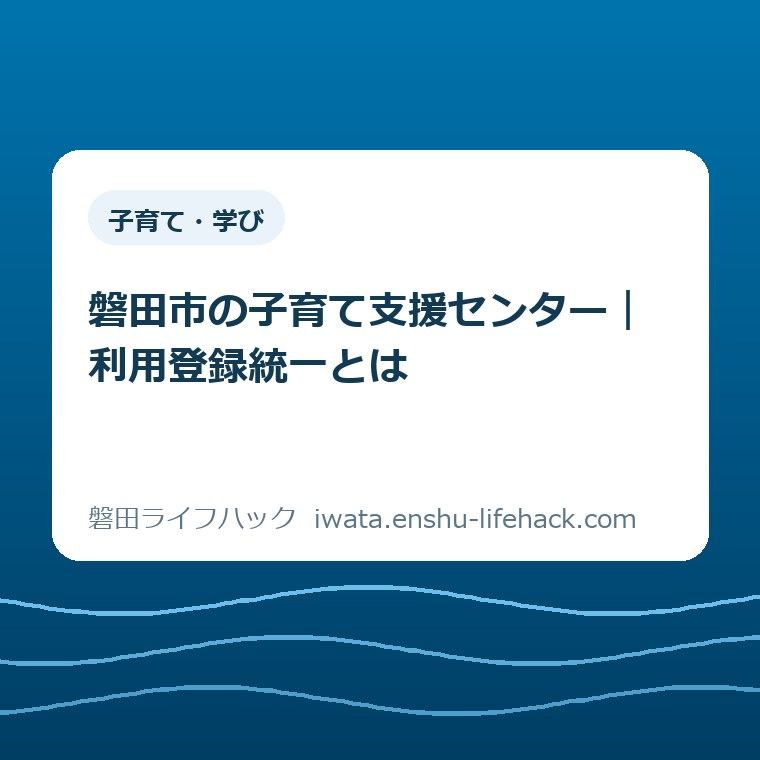

子育て・学び
磐田市の子育て支援センター｜利用登録統一とは

この記事の要点
Q. 別のセンターへ行くときも、また登録するの？
A. 磐田市の子育て支援センターは、2026年度から利用登録が統一されました。対象は就学前の子どもと保護者で、登録は年度に1度です。市公式ページのリンクや各センター受付のQRコードからスマートフォンで登録します。開館日やイベント予約まで共通になるわけではありません。今日は2026年度の登録を済ませたか一つ確認し、不明なら利用先に聞けば十分です。
外へ出る前から、保護者の仕事は始まっている
子育て支援センターの利用条件や必要な対応は、家庭の状況や施設、参加する催しによって変わります。登録を統一したという案内だけで、すべての利用条件が同じになったとは判断できません。この記事は、複数のセンターを使いたい保護者に向けて、登録と外出準備を分けて考えるためのものです。
子どもの着替えを用意し、飲み物を詰め、出発までにおむつを替える。昼寝の時間も気になる。親子で出かけるには、玄関を出る前に仕事があります。初めての場所なら、入口や駐車場に加え、受付で何をするのかも調べることになります。登録は、その準備の列に加わる一つです。
「スマートフォンで登録できます」と言われても、片手が空く時間をつくる必要は残ります。入力の途中で子どもに呼ばれれば、どこまで済ませたかを思い出すところから再開です。電子化を便利と評価するときも、保護者がすでに使っている時間を、なかったことにはしたくありません。
大石浩之（磐田市／不動産業）です。私は、利用登録の統一を、家族の段取りを減らせるかという目で見ています。手続きの名称を覚えるより、「今年度は済んだ」と分かる状態をつくる。そのほうが、次に別のセンターへ行こうと思ったときに役立つと考えます。
2026年度の利用登録統一は、何をまとめたのか
磐田市公式「子育て支援センター」は、2026年度から利用登録を統一したと案内しています。2026年9月18日更新のページを、9月24日に確認しました。市は利用登録を、センターを利用する人の情報を登録することと説明し、登録の頻度を年度に1度としています。
生活の言葉に直すと、施設を選ぶ話と、利用する人の情報を届ける話を分けられるようになった、ということです。市の案内は、センターごとに登録先を並べる形ではなく、2026年度の共通の登録リンクを示しています。別のセンターを検討するたびに、まず別の登録先を探す必要はありません。
登録の入口は、市公式ページにあるリンクと、各センター受付に設置されたQRコードです。市はスマートフォンで登録するよう案内しています。この記事から申請先を覚えておくより、市公式「子育て支援センター」の利用登録の電子化欄へ戻れるようにしておくと、年度が変わったときも入口を確認できます。
ここで見落としやすいのは、「1度」が一生に1度ではなく、年度に1度という点です。2025年度に利用した記憶があっても、それだけでは2026年度の登録済みとは判断できません。反対に、2026年度に登録した覚えがあるなら、別の施設へ行くという理由だけで、すぐに同じ情報を送り直す必要があると決めつけないことです。
9月18日は公式ページの更新日です。登録統一が9月18日に始まった、と読み替えてはいけません。公式の説明は「2026年度から」です。年度の途中で案内を知った家庭も、知った日と制度が変わった時期を切り分けておけば、いつの登録を確認すればよいかがはっきりします。

利用登録と、催しの予約は別の話
磐田市の子育て支援センターは、就学前の子どもと保護者が遊び、交流し、子育ての情報や相談につながる場所です。利用者情報を登録することと、特定の日の催しに申し込むことは役割が違います。登録統一の案内だけを根拠に、すべての催しが予約不要になったとは読めません。
市公式「施設ガイド のびのび」でも、イベントなどの予約は施設へ問い合わせるよう案内されています。共通の利用登録が済んでいても、参加したい催しの申込みが済んでいるとは限りません。登録という言葉を、予約完了の合図として使わないほうが、家族間の行き違いを防げます。
親子の居場所を探しているのか、子どもを預ける時間を探しているのかも、入口で分けたいところです。市のセンター案内は親子の交流や相談を説明しています。登録統一を、預かりの申込みまで共通になったという意味には広げられません。預ける制度を検討している場合は、こども誰でも通園制度と一時預かりを比べた記事で利用目的から整理できます。
出かける日を家族で話すときは、「登録は済んだ」「催しはまだ調べていない」のように、済んだ範囲を言葉にすると伝わります。「手続きは全部終わった」では、相手が予約まで終わったと受け取るかもしれません。細かな説明を増やすためではなく、あとで同じ確認をやり直さないための区別です。
開館時間は統一されない。木曜日の予定で考える
磐田市の子育て支援センターは、施設ごとに開館する曜日と時間が異なります。市公式の施設一覧で確認すると、のびのびは9時30分から17時30分までで、木曜日と年末年始が休館です。登録が共通でも、出かけられる時間まで共通になるわけではありません。
この記事の投稿日である2026年9月24日は木曜日です。のびのびへ行く予定を立てるなら、通常の休館曜日に当たります。登録を済ませたから今日行こう、という順番では、ここが抜けます。私は、登録の説明のすぐ近くに開館日の確認を置くほうが、外出の失敗を減らせると考えます。
施設名と場所もセットで見ると、準備が具体的になります。のびのびは上大之郷の急患センター内にあります。市の施設ガイドには授乳室やおむつ交換台の表示もあります。初めて行く家庭にとっては、登録方法と同じくらい、現地で子どもの世話ができる場所を把握することが安心材料になります。
開館時間だけを切り取った古い画像より、市公式ページの施設案内や、行く月のおたよりを参照する形を勧めます。おたよりの月が、出かける月と合っているかも見る対象です。この記事にすべての施設の予定を写すと、変更後に古い予定が残りやすくなります。具体的な外出日は公式の案内へ戻して確認します。
家から近い施設だけで決める必要もありません。帰宅後の食事や昼寝まで含めて、無理のない行き先を一つ選べばよいと思います。複数のセンターが候補に入ることと、一度に全部を訪ねることは違います。統一登録は選べる場所を考えやすくする入口であり、予定を埋めるための課題ではありません。
良い点——別の場所を試す前の調べ物を減らせる
利用登録統一の良い点は、複数の子育て支援センターを検討するときに、登録の入口を共通にできることだと私は考えます。慣れた施設以外も見てみたい家庭が、利用先の情報と登録先の情報を毎回一から結び直す負担を減らす方向です。
登録する情報をまとめることには、家族で確認する範囲を絞れる利点もあります。保護者のどちらが入力したか、2026年度に済ませたか。この二つを家庭内で確かめれば、次に何を聞くべきかが見えます。センターごとの記憶をいくつもたどるより、年度を軸に話せる仕組みは分かりやすいと思います。
市のページにはオンラインのリンクと現地のQRコードという入口が示されています。出発前に公式の案内を読めることと、施設でも登録の入口を見つけられることは、準備の選択肢になります。ただし、現地でどの程度の時間が必要か、どのような補助を受けられるかまでは、公式の説明だけで一律に言えません。
私は、入力回数が減る方向の変更を、小さなこととは扱いません。登録のためにスマートフォンを開くたびに、子どもを見ながら作業時間をつくる家庭もあるからです。何分短縮できたという実測値は確認していません。それでも、同じ情報を届ける入口を共通にする変更自体には、段取りを軽くする意味があります。
注文したい点——「済んだか分からない」に答える案内を
利用登録統一について私が注文したい点は、登録済みか分からなくなった家庭への案内です。登録先が一つになることに加え、確認する方法まで迷わず分かると、利用する側の負担はさらに減ります。入力できる人だけを想定せず、途中で止まった人も戻れる案内を望みます。
市公式の説明からは、登録内容を後で修正する具体的な方法や、きょうだいの情報をどう追加するかまでは確定できませんでした。自動的に過去の登録が引き継がれるとも書けません。私は、分からない部分を推測で埋めて、保護者に再入力を勧めることはしません。該当する場合に利用先へ確認する事項として残します。
スマートフォンが使えない場合の代替手段も、今回確認した案内だけで一律には説明できません。「電子申請だから簡単」と言い切ると、端末や操作の事情がある家庭を置いていきます。電話や受付で相談する先が分かるだけでも、立ち止まったときの負担は違うと考えます。
私は、登録状況を確かめるために必要な手間が、統一前と比べて実際にどの程度減ったのかまでは判断できずにいます。公開ページを読めば、すべての家庭が迷わず使えるとも言えません。変更の方向は評価しつつ、使う人がどこで止まるのかは、説明とは別に見ていく必要があると思います。
家族の記録は、個人情報の控えより「確認した範囲」
子育て支援センターの登録を家族で共有するなら、私は申請内容を丸ごと転送するより、年度と確認状況を短く残す方法を勧めます。たとえば「2026年度、登録した覚えあり。完了したかは未確認」と書けば、事実と記憶を分けられます。これは市の指定様式ではなく、家庭内の整理の例です。
覚えがあることと、確認できたことを同じ欄にしないのが狙いです。入力画面を開いた記憶だけなのか、送信を終えた記憶なのか。家族が代わりに手続きしたのか。分からないところに「不明」と残せば、空欄を見た人が未登録と決めつけて申し込む行き違いを避けやすくなります。
確認に使える記録が手元にある場合も、氏名や連絡先が入った画面を、必要以上に共有する理由はありません。家族に知らせたいのは、次の外出前に何を確かめるかです。記録を新しく整えること自体が負担なら、メモを作らず、入力した家族に年度を一つ聞くところで止めても構いません。
妊娠期から続く手続きでも、予約したことと手続きが済んだことは混ざりがちです。母子健康手帳の交付予約を整理した記事でも、窓口へ行く前の準備を扱っています。用事が変わっても、何を済ませたのかを一つずつ区切る考え方は、家族で予定を共有するときに使えます。

対案・結論——今日は2026年度の登録状況を一つ確認する
今日できる一歩は、子育て支援センターの2026年度の利用登録を済ませたか、一つ確かめることです。施設を全部比較することでも、申込みを最初からやり直すことでもありません。入力した家族が分かるなら、その家族に今年度の登録をしたか聞くところからで十分です。
確認できれば、その日はそこで区切れます。次に出かける予定ができたとき、利用先の開館日や催しの申込みを調べればよいからです。登録と外出の準備を一度に終わらせようとすると、必要な情報が増えます。用事を小さく分けることも、準備を続けられる形にする工夫です。
分からなければ、「2026年度の登録が済んでいるか不明です。別のセンターも利用したいのですが、何を確認すればよいですか」と利用先へ相談できます。この文は問い合わせ方の例です。電話口や受付で確認に必要な情報を聞かれたら、担当者の案内に沿って伝えます。確認方法をこの記事で決めつけることはしません。
未登録だと分かった家庭は、市公式ページの2026年度の登録案内を読む段階へ進めます。読み終えてから入力する時間を選んでも構いません。子育ての相談先そのものを探している場合には、磐田市の子育て支援の案内が入口になります。この記事は、窓口一覧を増やすより、登録統一の意味を理解する役割に絞っています。
大石の視点——制度が立派でも、使う人が動けなければ意味がない
私は、制度が立派でも、使う人が動けなければ意味がないと考えます。子育て支援センターの登録統一を評価する物差しも同じです。共通のフォームができたという説明だけで終わらず、保護者が玄関を出るまでに抱える仕事が一つ減るか。そこまで見て初めて、暮らしの便利さとして受け取れると思います。
不動産の仕事でも、書類の名前と、家族の誰がいつ動くかは別の話です。この記事では、センターを利用した実体験を語っているわけではありません。私の意見として、仕組みを説明するときは、読む人が次に動く場面まで言葉をつなぎたいと考えています。今回は、その場面を「今年度の登録を確認する」に置きました。
登録が共通になれば、慣れた場所以外を候補に入れるときの迷いを減らせるはずです。ただ、子どもの体調や家庭の予定が変われば、外出を見送る日もあります。登録したことを、必ず出かける約束にしなくてよい。利用する日に備える確認ができたなら、その日の準備として十分だと思います。
よくある質問
磐田市の子育て支援センターの利用登録について、施設を変える場合、催しへ参加する場合、登録済みか不明な場合を整理します。
別の子育て支援センターへ行くたびに登録が必要ですか？
磐田市は2026年度から利用登録を統一し、年度に1度の登録と案内しています。施設が変わるたびに別の登録が必要だと決めつけず、まず今年度の登録状況を確認してください。2025年度の利用経験だけでは今年度の登録済みとは判断できません。登録内容の変更やきょうだいの扱いなど、個別の対応は利用先へ確認します。
利用登録が済めば、イベントにも予約なしで参加できますか？
利用者情報の登録と、イベントの予約は別です。磐田市の「施設ガイド のびのび」は、イベントなどの予約を施設へ問い合わせるよう案内しています。共通登録だけで参加の申込みまで完了したとは判断できません。参加したい催しのおたよりで対象や申込み方法を確認し、不明な点は開催施設へ尋ねてください。
2026年度に登録したか分からないときはどうしますか？
入力した家族や、手元にある記録を一つ確認することを勧めます。それでも分からなければ、再送信を決める前に利用先へ相談してください。市の公開案内だけでは、登録状況の照会や修正の具体的な方法は確定できません。スマートフォンでの操作が難しい場合も、利用先に事情を伝え、対応を確認してください。
参考にした公式情報
- 磐田市「子育て支援センター」（2026年9月24日確認）
- 磐田市「施設ガイド のびのび」（2026年9月24日確認）

最終確認日：2026-09-24 ／ 本記事は公表情報と執筆者の見解を分けて記載しています。制度の適用や必要な対応は個別条件で変わります。登録方法・開館日・催しの予定は変更される場合があります。最終的には磐田市公式ページで確認し、個別の対応は利用先へお尋ねください。